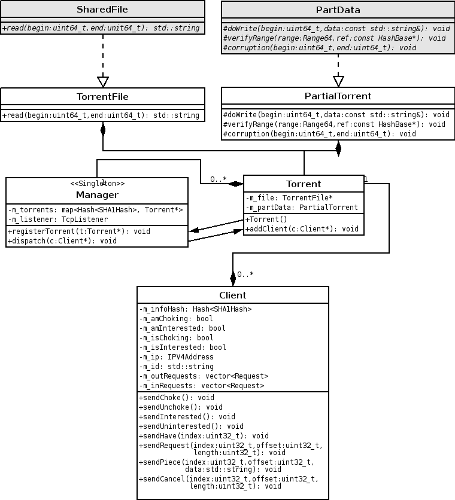

Alo Sarv
August, 2005

Manager is a Singleton class, which owns Torrent objects, and keeps a map of them, keyed by info_hash value, which is unique to every torrent. Manager class also controls incoming connections listener, and accepts connections from it. Upon accepting an incoming connection, it constructs a Client object, and attaches the newly connected socket to the Client. The Client object will be owned by Manager class for the time being.
Once the newly-created Client object receives handshake, it emits handshakeReceived signal, which Manager will handle. Based on the info_hash value received in the handshake, Manager will attach the client to an existing Torrent, or drop the client if no torrent with the specified info_hash could be found. After attaching the client to an existing Torrent object, Manager also transfers ownership of the object to the Torrent object.
Notice that differently from other p2p networks, in Bittorrent it is not needed to keep disconnected Client objects alive, so there is no need for "merging" system, as implemented in eDonkey2000 plugin. All incoming clients trigger a new Client object being constructed, and once a Client loses it's underlying TCP connection, it must immediately be destroyed (most likely implementation would be a connectionLost signal being emitted), so whoever owns the object at the moment will destroy it.
In Bittorrent, a single download often consists of many files, which form a bigger package. On protocol level, there is no "file" concept at all, and all data in the torrent is handled as single long stream. The client is responsible for keeping track of which file what data range belongs to, and for the construction of the final concrete files.
In Hydranode, this means that a TorrentFile object is-a wrapper around one-to-many SharedFile objects, and directs IO calls to the specific SharedFile object which corresponds to the right file. Likewise, PartialTorrent object is-a wrapper around PartData object, keeping a offset-keyed map of sub-objects of type PartData, and forwards the required functions to the concrete PartData objects.
Since TorrentFile and PartialTorrent objects are derived classes from SharedFile and PartData, respectivly, they cannot be constructed by FilesList on applications startup. Hence, they must be constructed by Bittorrent module during it's startup. Most likely implementation would be to keep a copy of the corresponding .torrent file in configuration directory, and re-construct the TorrentFile/PartialTorrent objects from that.
Since Bittorrent protocol has no concept of files, chunk hashes can cross file boundaries. Hydranode hashing engine, however, doesn't support it by default, hence the HashWork class must also be customized to support this kind of behaviour. To this, the needed virtual functions will be overridden, to allow data verification across multiple files.
There are many proper Bittorrent protocol specifications available on the internet, most useful ones being the official specification and a wiki-based unofficial specfication. As such, the entire protocol specification is beyond the scope of this document; instead, we will only go briefly over the details here.
The metainfo file (.torrent file), as well as Tracker responses in Client <-> Tracker communication are bencoded. Four data types are specified (in Boost.Spirit grammar notification):
Integers: 'i' >> int_p >> 'e'
Strings: int_p[assign_a(tmp)] >> ':' >> repeat_p(boost::ref(tmp))[anychar_p]
Lists: 'l' >> *(Integer | String | List | Dict) >> 'e'
Dictionaries: 'd' >> *(String >> (Integer | String | List | Dict)) >> 'e'
Client initializes the communication by establishing a TCP connection with the tracker, at the specified IP / Port indicated in the MetaInfo file. Upon a successful connection, Client sends a HTTP request with the following structure:
GET /%1%?info_hash=%2%&peer_id=%3%&port=%4%&uploaded=%5%&downloaded=%6%&left=%7%&event=%8%compact=%9% HTTP/1.1
Connection: close
Host: %10%:%11%
The arguments to GET request are as follows:
%1% Announce URL path, e.g. "/announce" for http://tracker.url/announce
%2% SHA1 hash of the info dictionary (bencoded form) of the MetaInfo file (urlencoded)
%3% ID of the Client (20 bytes) (may be url-encoded)
%4% Port where the Client has a TCP listener socket for incoming connections
%5% Amount of data the Client has already uploaded this torrent
%6% Amount of data the Client has already downloaded from this torrent
%7% How much data he Client still needs to complete the Torrent
%8% One of "started", "stopped" or "completed"
%9% Whether the client understands compact peer list (some modern trackers require this already)
%10% Host of the tracker
%11% Port of the tracker
Notice that the info_hash key, as well as (possibly) the peer_id key must be URL-encoded, e.g. all characters not in the set 0-9 a-z A-Z $-_+!*'() must be replaced with % followed by hexadecimal notation of the character.
Implementors note: When the hexadecimal value of the character is
less than 16,
it must be preceeded with '0' character - many trackers expect
two-digit hexadecimal
numbers in all cases.
Tracker responds with a standard HTTP response, where data part
contains a bencoded
dictionary with a set of the following keys: "failure reason", "warning
message",
"interval", "min interval", "tracker id", "complete", "incomplete",
"peers". The latter
is a list of dictionaries with the following keys: "peer id", "ip",
"port", or in case of compact list, a bencoded string with content
being 4+2-byte value pairs (binary). The first 4 bytes in each pair
represent the ip address of the client, the latter the port.
Client <-> Client communication is done over TCP connection; messages can be sent in both direction, and look identical in both ways. Packet header:
+--------+--------+--------+--------+--------+--------+-------
| packet length | id | payload
+--------+--------+--------+--------+--------+--------+-------
All integer values in the protocol are 4 bytes, in big-endian ordering. Payload is length -1 bytes long (e.g. packet id is also considered when calculating packet length). The following packets are currently being used in the official protocol:
keep-alive: length = 0, no ID / payload parts
choke: ID = 0, no payload
unchoke: ID = 1, no payload
interested: ID = 2, no payload
not interested: ID = 3, no payload
have: ID = 4, <index>
bitfield: ID = 5, set of bits indicating which chunks the client has
request: ID = 6, <index><begin><length>
piece: ID = 7, <index><begin><data>
cancel: ID = 8, <index><begin><length>